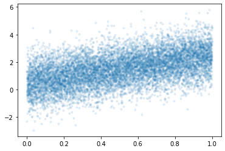

강의영상
youtube: https://youtube.com/playlist?list=PLQqh36zP38-wvV9xuYHvx0Gn7KDGNJbwj
import
[PhysicalDevice(name='/physical_device:CPU:0', device_type='CPU')]basis가 orthogonal하냐?
overfitting 이슈는 변수가 많다고해서 무조건 발생하는 것은 아님! 변수가 많이 있어도 orthogonal하게 잘 넣으면 심지어 무한대의 basis를 갖고있어도 overfitting이슈가 발생하지 않는다. 이렇게 맞추는 것을 semi-parametric modeling 이라고 한다!
- ex. 직선의 basis: 절편과 기울기
중간고사 관련 잡담
중간고사 3번문제
- 특이한모형: 오버핏이 일어날 수 없는 모형이다. - 유의미한 coef: 상수항(bias), \(\cos(t)\)의 계수, \(\cos(2t)\)의 계수, \(\cos(5t)\)의 계수. - 유의미하지 않은 coef: \(\cos(3t)\)의 계수, \(\cos(4t)\)의 계수 - 유의미하지 않은 계수는 \(n%\)이 커질수록 0으로 추정된다 = \(\cos(3t)\)와 \(\cos(5t)\)는 사용자가 임의로 제외하지 않아도 결국 모형에서 알아서 제거된다 = overfit이 일어나지 않는다. 모형이 알아서 유의미한 변수만 뽑아서 fit하는 느낌
- 3번문제는 overfit이 일어나지 않는다. 이러한 신기한 일이 일어나는 이유는 모든 설명변수가 직교하기 때문임. - 이런 모형의 장점: overfit이 일어날 위험이 없으므로 train/test로 나누어 학습할 이유가 없다. (샘플만 버리는 꼴, test에 빼둔 observation까지 모아서 학습해 \(\beta\)를 좀 더 정확히 추론하는게 차라리 더 이득) - 이러한 모형에서 할일: 추정된 계수들이 0인지 아닌지만 test하면 된다. (이것을 유의성검정이라고 한다)
- 직교기저의 예시 - 빨강과 파랑을 255,255만큼 섞으면 보라색이 된다. - 빨강과 파랑과 노랑을 각각 255,255,255만큼 섞으면 검은색이 된다. - 임의의 어떠한 색도 빨강,파랑,노랑의 조합으로 표현가능하다. 즉 \(\text{color}= \text{red}*\beta_1 + \text{blue}*\beta_2 + \text{yellow}*\beta_3\) 이다. - (빨,파,노)는 색을 표현하는 basis이다. (적절한 \(\beta_1,\beta_2,\beta_3\)을 구하기만 하면 임의의 색도 표현가능) - (빨,보,노)역시 색을 표현하는 basis라 볼 수 있다. (파란색이 필요할때 보라색-빨간색을 하면되니까) - (빨,보,검)역시 색을 표현하는 basis라 볼 수 있다. (파란색이 필요하면 보라색-빨간색을 하면되고, 노란색이 필요하면 검정색-보라색을 하면 되니까) - (빨,파,노)는 직교기저이다.
- 3번에서 알아둘 것: (1) 직교기저의 개념 (추후 재설명) (2) 임의의 색을 표현하려면 3개의 basis가 필요함
중간고사 1-(3)번 문제
- 그림을 그려보자.
_x= tf.constant(np.arange(1,10001)/10000)
_y= tnp.random.randn(10000) + (0.5 + 2*_x)
plt.plot(_x,_y,'.',alpha=0.1)
- 저것 꼭 10000개 다 모아서 loss계산해야할까?
- 대충 이정도만 모아서 해도 비슷하지 않을까? \(\to\) 해보자!
- 주황색만가지고 기울기, 절편 추론을 해보자.
경사하강법과 확률적경사하강법
원래 확률적경사하강법이 딥러닝을 하려고 만든것이 아니다.(만들어진 의도와 사용이 다름) 그런데 거기에 맞게 진화를 한 것. 그래서 되게 헷갈린다…
ver1: 모든 샘플을 사용하여 slope계산 (gradient descent)
- 단순회귀분석에서 샘플 10개 관측: \((x_1,y_1),\dots,(x_{10},y_{10})\).
(epoch1) \(loss=\sum_{i=1}^{10}(y_i-\beta_0-\beta_1x_i)^2 \quad \to \quad slope \quad \to \quad update\)
(epoch2) \(loss=\sum_{i=1}^{10}(y_i-\beta_0-\beta_1x_i)^2 \quad \to \quad slope \quad \to \quad update\)
…
for문 이 3번 돌아감.
ver2: 하나의 샘플만 사용하여 slope계산
(epoch1) - \(loss=(y_1-\beta_0-\beta_1x_1)^2 \quad \to \quad slope \quad \to \quad update\) - \(loss=(y_2-\beta_0-\beta_1x_2)^2 \quad \to \quad slope \quad \to \quad update\) - … - \(loss=(y_{10}-\beta_0-\beta_1x_{10})^2 \quad \to \quad slope \quad \to \quad update\)
(epoch2) - \(loss=(y_1-\beta_0-\beta_1x_1)^2 \quad \to \quad slope \quad \to \quad update\) - \(loss=(y_2-\beta_0-\beta_1x_2)^2 \quad \to \quad slope \quad \to \quad update\) - … - \(loss=(y_{10}-\beta_0-\beta_1x_{10})^2 \quad \to \quad slope \quad \to \quad update\)
…
for문이 30번 돌아감.
ver3: \(m(\leq n)\)개의 샘플만 사용하여 slope계산 (mini-batch)
\(m=3\)이라고 하자.
(epoch1) - \(loss=\sum_{i=1}^{3}(y_i-\beta_0-\beta_1x_i)^2 \quad \to \quad slope \quad \to \quad update\) - \(loss=\sum_{i=4}^{6}(y_i-\beta_0-\beta_1x_i)^2 \quad \to \quad slope \quad \to \quad update\) - \(loss=\sum_{i=7}^{9}(y_i-\beta_0-\beta_1x_i)^2 \quad \to \quad slope \quad \to \quad update\) - \(loss=(y_{10}-\beta_0-\beta_1x_{10})^2 \quad \to \quad slope \quad \to \quad update\)
1,2,3번 observation들만 뽑아서 loss를 계산해서 그것만가지고 update \(\to\) 4,5,6먼만 가지고 loss계산해서 update \(\to\) 7,8,9를가지고 loss구하고 업데이트 \(\to\) 남은 하나가지고 loss구하고 업데이트… // 한 에폭 끝!
(epoch2) - \(loss=\sum_{i=1}^{3}(y_i-\beta_0-\beta_1x_i)^2 \quad \to \quad slope \quad \to \quad update\) - \(loss=\sum_{i=4}^{6}(y_i-\beta_0-\beta_1x_i)^2 \quad \to \quad slope \quad \to \quad update\) - \(loss=\sum_{i=7}^{9}(y_i-\beta_0-\beta_1x_i)^2 \quad \to \quad slope \quad \to \quad update\) - \(loss=(y_{10}-\beta_0-\beta_1x_{10})^2 \quad \to \quad slope \quad \to \quad update\)
…
용어의 정리
옛날 (좀 더 엄밀)
- ver1: gradient descent, batch gradient descent
- ver2: stochastic gradient descent
- ver3: mini-batch gradient descent, mini-batch stochastic gradient descent
요즘
- ver1: gradient descent
- ver2: stochastic gradient descent with batch size = 1
- ver3: stochastic gradient descent - https://www.deeplearningbook.org/contents/optimization.html, 알고리즘 8-1 참고.
지금은 mini-batch가 포함된 방법을 stochastic gradient descent라고 부른다. 왜냐하면 1,2는 사장된 방법. 버전 3만 쓴다.(유명한 사람들이 학회에서 그렇게 부르기 시작했음.)
note: 이렇게 많이 쓰는 이유? ver1,2는 사실상 없는 방법이므로
ver1,2,3 이외에 좀 더 지저분한 것들이 있다.
- ver2,3에서 샘플을 셔플할 수도 있다.
- ver3에서 일부 샘플이 학습에 참여 안하는 버전도 있다.
- 개인적 생각: 크게3개정도만 알면 괜찮고 나머지는 그렇게 유의미하지 않아보인다.
Discussion
- 핵심개념
- 메모리사용량1: ver1 > ver3 > ver2
- 계산속도: ver1 > ver3 > ver2
- local-min에 갇힘: ver1 > ver3 > ver2
로컬미니멈에 갇힌가는 건 로컬미니멈을 잘 찾는다라고 생각 (정신이 제대로 박힌애)
대충대충 학습하면 로컬미니멈에서 딱 멈춰야하는데 대충대충 계산해서 기울기가 딱 \(0\)이 안나오는 것. (운 좋게 탈출하는 경우도 있음.)
- 본질: GPU 메모리가 한정되어 있어서 ver1을 쓰지는 못한다. GPU 메모리를 가장 적게쓰는것은 ver2인데 이것은 너무 불안정하다.
- 틀리진 않지만 어색한 블로그 정리 내용들
경사하강법은 종종 국소최소점에 갇히는 문제가 있다. 이를 해결하기 위해서 등장한 방법이 확률적 경사하강법이다. –> 영 틀린말은 아니지만 그걸 의도하고 만든건 아님 (이건 side effect)
경사하강법은 계산시간이 오래걸린다. 계산을 빠르게 하기 위해서 등장한 방법이 확률적 경사하강법이다. –> 1회 업데이트는 빠르게 계산함. 하지만 그것이 최적의 \(\beta\)를 빠르게 얻을 수 있다는 의미는 아님
원래 경사하강법은 local minimum에 빠지기 쉬운 알고리즘! 그런데 그나마 둘 중에 비교를 하자면 확률적으로 하면 로컬 미니멈에 빠졌다가 어쩌다 운좋아서 튀어 나가는 경우가 있다.
동일한 컴퓨터 자원으로 수렴을 더 빨리 시킬 수 있냐? 그건 아님 (그건 모름).
그럼 왜 쓰냐???
메모리 사용량만 보면 됩니다!
fashion_mnist 모듈
tf.keras.datasets.fashion_mnist.load_data()
- tf.keras.datasets.fashion_mnist.load_data 의 리턴값 조사
Signature: tf.keras.datasets.fashion_mnist.load_data() Source: @keras_export("keras.datasets.fashion_mnist.load_data") def load_data(): """Loads the Fashion-MNIST dataset. This is a dataset of 60,000 28x28 grayscale images of 10 fashion categories, along with a test set of 10,000 images. This dataset can be used as a drop-in replacement for MNIST. The classes are: | Label | Description | |:-----:|-------------| | 0 | T-shirt/top | | 1 | Trouser | | 2 | Pullover | | 3 | Dress | | 4 | Coat | | 5 | Sandal | | 6 | Shirt | | 7 | Sneaker | | 8 | Bag | | 9 | Ankle boot | Returns: Tuple of NumPy arrays: `(x_train, y_train), (x_test, y_test)`. **x_train**: uint8 NumPy array of grayscale image data with shapes `(60000, 28, 28)`, containing the training data. **y_train**: uint8 NumPy array of labels (integers in range 0-9) with shape `(60000,)` for the training data. **x_test**: uint8 NumPy array of grayscale image data with shapes (10000, 28, 28), containing the test data. **y_test**: uint8 NumPy array of labels (integers in range 0-9) with shape `(10000,)` for the test data. Example: ```python (x_train, y_train), (x_test, y_test) = fashion_mnist.load_data() assert x_train.shape == (60000, 28, 28) assert x_test.shape == (10000, 28, 28) assert y_train.shape == (60000,) assert y_test.shape == (10000,) ``` License: The copyright for Fashion-MNIST is held by Zalando SE. Fashion-MNIST is licensed under the [MIT license]( https://github.com/zalandoresearch/fashion-mnist/blob/master/LICENSE). """ dirname = os.path.join("datasets", "fashion-mnist") base = "https://storage.googleapis.com/tensorflow/tf-keras-datasets/" files = [ "train-labels-idx1-ubyte.gz", "train-images-idx3-ubyte.gz", "t10k-labels-idx1-ubyte.gz", "t10k-images-idx3-ubyte.gz", ] paths = [] for fname in files: paths.append(get_file(fname, origin=base + fname, cache_subdir=dirname)) with gzip.open(paths[0], "rb") as lbpath: y_train = np.frombuffer(lbpath.read(), np.uint8, offset=8) with gzip.open(paths[1], "rb") as imgpath: x_train = np.frombuffer(imgpath.read(), np.uint8, offset=16).reshape( len(y_train), 28, 28 ) with gzip.open(paths[2], "rb") as lbpath: y_test = np.frombuffer(lbpath.read(), np.uint8, offset=8) with gzip.open(paths[3], "rb") as imgpath: x_test = np.frombuffer(imgpath.read(), np.uint8, offset=16).reshape( len(y_test), 28, 28 ) return (x_train, y_train), (x_test, y_test) File: ~/anaconda3/envs/torch/lib/python3.8/site-packages/keras/datasets/fashion_mnist.py Type: function
데이터생성 및 탐색
- tf.keras.datasets.fashion_mnist.load_data()를 이용한 데이터 생성
Downloading data from https://storage.googleapis.com/tensorflow/tf-keras-datasets/train-labels-idx1-ubyte.gz
29515/29515 [==============================] - 0s 0us/step
Downloading data from https://storage.googleapis.com/tensorflow/tf-keras-datasets/train-images-idx3-ubyte.gz
26421880/26421880 [==============================] - 2s 0us/step
Downloading data from https://storage.googleapis.com/tensorflow/tf-keras-datasets/t10k-labels-idx1-ubyte.gz
5148/5148 [==============================] - 0s 0us/step
Downloading data from https://storage.googleapis.com/tensorflow/tf-keras-datasets/t10k-images-idx3-ubyte.gz
4422102/4422102 [==============================] - 0s 0us/step- 차원확인
((60000, 28, 28), (60000,), (10000, 28, 28), (10000,))- 60000은 obs숫자인듯
- (28,28)은 28픽셀,28픽셀을 의미하는듯
- train/test는 6:1로 나눈것 같음
- 첫번째 obs
- 첫번쨰 obs에 대응하는 라벨
- 첫번째 obs와 동일한 라벨을 가지는 그림을 찾아보자.
_5월2일(2)_files/figure-html/cell-14-output-2.png)
데이터구조
- \({\bf X}\): (n,28,28)
- \({\bf y}\): (n,) , \(y=0,1,2,3,\dots,9\)
예제1
데이터 정리
- y=0,1에 대응하는 이미지만 정리하자. (우리가 배운건 로지스틱이니까)
풀이1: 은닉층을 포함한 신경망 // epochs=100
#collapse
gv('''
splines=line
subgraph cluster_1{
style=filled;
color=lightgrey;
"x1"
"x2"
".."
"x784"
label = "Layer 0"
}
subgraph cluster_2{
style=filled;
color=lightgrey;
"x1" -> "node1"
"x2" -> "node1"
".." -> "node1"
"x784" -> "node1"
"x1" -> "node2"
"x2" -> "node2"
".." -> "node2"
"x784" -> "node2"
"x1" -> "..."
"x2" -> "..."
".." -> "..."
"x784" -> "..."
"x1" -> "node30"
"x2" -> "node30"
".." -> "node30"
"x784" -> "node30"
label = "Layer 1: relu"
}
subgraph cluster_3{
style=filled;
color=lightgrey;
"node1" -> "y"
"node2" -> "y"
"..." -> "y"
"node30" -> "y"
label = "Layer 2: sigmoid"
}
''')tf.random.set_seed(43052)
net = tf.keras.Sequential()
net.add(tf.keras.layers.Dense(30,activation='relu'))
net.add(tf.keras.layers.Dense(1,activation='sigmoid'))
net.compile(optimizer='sgd',loss=tf.losses.binary_crossentropy)
net.fit(X,y,epochs=100,batch_size=12000)Epoch 1/100
1/1 [==============================] - 0s 122ms/step - loss: 220.9145
Epoch 2/100
1/1 [==============================] - 0s 9ms/step - loss: 6800.3174
Epoch 3/100
1/1 [==============================] - 0s 9ms/step - loss: 0.7045
Epoch 4/100
1/1 [==============================] - 0s 9ms/step - loss: 0.7012
Epoch 5/100
1/1 [==============================] - 0s 9ms/step - loss: 0.7004
Epoch 6/100
1/1 [==============================] - 0s 9ms/step - loss: 0.6997
Epoch 7/100
1/1 [==============================] - 0s 9ms/step - loss: 0.6991
Epoch 8/100
1/1 [==============================] - 0s 9ms/step - loss: 0.6985
Epoch 9/100
1/1 [==============================] - 0s 9ms/step - loss: 0.6979
Epoch 10/100
1/1 [==============================] - 0s 9ms/step - loss: 0.6976
Epoch 11/100
1/1 [==============================] - 0s 9ms/step - loss: 0.6973
Epoch 12/100
1/1 [==============================] - 0s 9ms/step - loss: 0.6970
Epoch 13/100
1/1 [==============================] - 0s 9ms/step - loss: 0.6968
Epoch 14/100
1/1 [==============================] - 0s 9ms/step - loss: 0.6966
Epoch 15/100
1/1 [==============================] - 0s 9ms/step - loss: 0.6964
Epoch 16/100
1/1 [==============================] - 0s 9ms/step - loss: 0.6963
Epoch 17/100
1/1 [==============================] - 0s 9ms/step - loss: 0.6961
Epoch 18/100
1/1 [==============================] - 0s 9ms/step - loss: 0.6959
Epoch 19/100
1/1 [==============================] - 0s 9ms/step - loss: 0.6958
Epoch 20/100
1/1 [==============================] - 0s 9ms/step - loss: 0.6956
Epoch 21/100
1/1 [==============================] - 0s 9ms/step - loss: 0.6955
Epoch 22/100
1/1 [==============================] - 0s 9ms/step - loss: 0.6953
Epoch 23/100
1/1 [==============================] - 0s 9ms/step - loss: 0.6952
Epoch 24/100
1/1 [==============================] - 0s 9ms/step - loss: 0.6951
Epoch 25/100
1/1 [==============================] - 0s 9ms/step - loss: 0.6949
Epoch 26/100
1/1 [==============================] - 0s 9ms/step - loss: 0.6948
Epoch 27/100
1/1 [==============================] - 0s 9ms/step - loss: 0.6947
Epoch 28/100
1/1 [==============================] - 0s 9ms/step - loss: 0.6946
Epoch 29/100
1/1 [==============================] - 0s 9ms/step - loss: 0.6945
Epoch 30/100
1/1 [==============================] - 0s 9ms/step - loss: 0.6944
Epoch 31/100
1/1 [==============================] - 0s 9ms/step - loss: 0.6943
Epoch 32/100
1/1 [==============================] - 0s 9ms/step - loss: 0.6942
Epoch 33/100
1/1 [==============================] - 0s 9ms/step - loss: 0.6942
Epoch 34/100
1/1 [==============================] - 0s 9ms/step - loss: 0.6941
Epoch 35/100
1/1 [==============================] - 0s 9ms/step - loss: 0.6940
Epoch 36/100
1/1 [==============================] - 0s 9ms/step - loss: 0.6940
Epoch 37/100
1/1 [==============================] - 0s 9ms/step - loss: 0.6939
Epoch 38/100
1/1 [==============================] - 0s 9ms/step - loss: 0.6939
Epoch 39/100
1/1 [==============================] - 0s 9ms/step - loss: 0.6938
Epoch 40/100
1/1 [==============================] - 0s 9ms/step - loss: 0.6937
Epoch 41/100
1/1 [==============================] - 0s 9ms/step - loss: 0.6937
Epoch 42/100
1/1 [==============================] - 0s 9ms/step - loss: 0.6936
Epoch 43/100
1/1 [==============================] - 0s 9ms/step - loss: 0.6936
Epoch 44/100
1/1 [==============================] - 0s 9ms/step - loss: 0.6935
Epoch 45/100
1/1 [==============================] - 0s 9ms/step - loss: 0.6935
Epoch 46/100
1/1 [==============================] - 0s 9ms/step - loss: 0.6934
Epoch 47/100
1/1 [==============================] - 0s 9ms/step - loss: 0.6934
Epoch 48/100
1/1 [==============================] - 0s 9ms/step - loss: 0.6934
Epoch 49/100
1/1 [==============================] - 0s 9ms/step - loss: 0.6933
Epoch 50/100
1/1 [==============================] - 0s 9ms/step - loss: 0.6933
Epoch 51/100
1/1 [==============================] - 0s 9ms/step - loss: 0.6933
Epoch 52/100
1/1 [==============================] - 0s 9ms/step - loss: 0.6933
Epoch 53/100
1/1 [==============================] - 0s 9ms/step - loss: 0.6933
Epoch 54/100
1/1 [==============================] - 0s 9ms/step - loss: 0.6933
Epoch 55/100
1/1 [==============================] - 0s 9ms/step - loss: 0.6933
Epoch 56/100
1/1 [==============================] - 0s 9ms/step - loss: 0.6933
Epoch 57/100
1/1 [==============================] - 0s 9ms/step - loss: 0.6933
Epoch 58/100
1/1 [==============================] - 0s 9ms/step - loss: 0.6933
Epoch 59/100
1/1 [==============================] - 0s 9ms/step - loss: 0.6933
Epoch 60/100
1/1 [==============================] - 0s 9ms/step - loss: 0.6933
Epoch 61/100
1/1 [==============================] - 0s 9ms/step - loss: 0.6933
Epoch 62/100
1/1 [==============================] - 0s 8ms/step - loss: 0.6933
Epoch 63/100
1/1 [==============================] - 0s 9ms/step - loss: 0.6933
Epoch 64/100
1/1 [==============================] - 0s 9ms/step - loss: 0.6933
Epoch 65/100
1/1 [==============================] - 0s 9ms/step - loss: 0.6933
Epoch 66/100
1/1 [==============================] - 0s 9ms/step - loss: 0.6933
Epoch 67/100
1/1 [==============================] - 0s 9ms/step - loss: 0.6933
Epoch 68/100
1/1 [==============================] - 0s 9ms/step - loss: 0.6932
Epoch 69/100
1/1 [==============================] - 0s 9ms/step - loss: 0.6932
Epoch 70/100
1/1 [==============================] - 0s 9ms/step - loss: 0.6932
Epoch 71/100
1/1 [==============================] - 0s 9ms/step - loss: 0.6932
Epoch 72/100
1/1 [==============================] - 0s 10ms/step - loss: 0.6932
Epoch 73/100
1/1 [==============================] - 0s 9ms/step - loss: 0.6932
Epoch 74/100
1/1 [==============================] - 0s 10ms/step - loss: 0.6932
Epoch 75/100
1/1 [==============================] - 0s 9ms/step - loss: 0.6932
Epoch 76/100
1/1 [==============================] - 0s 9ms/step - loss: 0.6932
Epoch 77/100
1/1 [==============================] - 0s 9ms/step - loss: 0.6932
Epoch 78/100
1/1 [==============================] - 0s 9ms/step - loss: 0.6932
Epoch 79/100
1/1 [==============================] - 0s 9ms/step - loss: 0.6932
Epoch 80/100
1/1 [==============================] - 0s 9ms/step - loss: 0.6932
Epoch 81/100
1/1 [==============================] - 0s 9ms/step - loss: 0.6932
Epoch 82/100
1/1 [==============================] - 0s 9ms/step - loss: 0.6932
Epoch 83/100
1/1 [==============================] - 0s 9ms/step - loss: 0.6932
Epoch 84/100
1/1 [==============================] - 0s 10ms/step - loss: 0.6932
Epoch 85/100
1/1 [==============================] - 0s 8ms/step - loss: 0.6932
Epoch 86/100
1/1 [==============================] - 0s 9ms/step - loss: 0.6932
Epoch 87/100
1/1 [==============================] - 0s 8ms/step - loss: 0.6932
Epoch 88/100
1/1 [==============================] - 0s 8ms/step - loss: 0.6932
Epoch 89/100
1/1 [==============================] - 0s 8ms/step - loss: 0.6932
Epoch 90/100
1/1 [==============================] - 0s 8ms/step - loss: 0.6932
Epoch 91/100
1/1 [==============================] - 0s 8ms/step - loss: 0.6932
Epoch 92/100
1/1 [==============================] - 0s 8ms/step - loss: 0.6932
Epoch 93/100
1/1 [==============================] - 0s 8ms/step - loss: 0.6932
Epoch 94/100
1/1 [==============================] - 0s 8ms/step - loss: 0.6932
Epoch 95/100
1/1 [==============================] - 0s 8ms/step - loss: 0.6932
Epoch 96/100
1/1 [==============================] - 0s 8ms/step - loss: 0.6932
Epoch 97/100
1/1 [==============================] - 0s 8ms/step - loss: 0.6932
Epoch 98/100
1/1 [==============================] - 0s 8ms/step - loss: 0.6932
Epoch 99/100
1/1 [==============================] - 0s 8ms/step - loss: 0.6932
Epoch 100/100
1/1 [==============================] - 0s 8ms/step - loss: 0.6932<keras.callbacks.History at 0x7f640c5e9c40>풀이2: 옵티마이저 개선
tf.random.set_seed(43052)
net = tf.keras.Sequential()
net.add(tf.keras.layers.Dense(30,activation='relu'))
net.add(tf.keras.layers.Dense(1,activation='sigmoid'))
net.compile(optimizer='adam',loss=tf.losses.binary_crossentropy)
net.fit(X,y,epochs=100,batch_size=12000)Epoch 1/100
1/1 [==============================] - 0s 138ms/step - loss: 220.9145
Epoch 2/100
1/1 [==============================] - 0s 10ms/step - loss: 88.9490
Epoch 3/100
1/1 [==============================] - 0s 10ms/step - loss: 7.5895
Epoch 4/100
1/1 [==============================] - 0s 9ms/step - loss: 33.7521
Epoch 5/100
1/1 [==============================] - 0s 9ms/step - loss: 40.2290
Epoch 6/100
1/1 [==============================] - 0s 9ms/step - loss: 28.9675
Epoch 7/100
1/1 [==============================] - 0s 9ms/step - loss: 16.5128
Epoch 8/100
1/1 [==============================] - 0s 10ms/step - loss: 9.4911
Epoch 9/100
1/1 [==============================] - 0s 10ms/step - loss: 6.2027
Epoch 10/100
1/1 [==============================] - 0s 9ms/step - loss: 5.2417
Epoch 11/100
1/1 [==============================] - 0s 9ms/step - loss: 5.5172
Epoch 12/100
1/1 [==============================] - 0s 9ms/step - loss: 6.5900
Epoch 13/100
1/1 [==============================] - 0s 9ms/step - loss: 7.8605
Epoch 14/100
1/1 [==============================] - 0s 9ms/step - loss: 8.5884
Epoch 15/100
1/1 [==============================] - 0s 9ms/step - loss: 8.3991
Epoch 16/100
1/1 [==============================] - 0s 9ms/step - loss: 7.4675
Epoch 17/100
1/1 [==============================] - 0s 9ms/step - loss: 6.2581
Epoch 18/100
1/1 [==============================] - 0s 9ms/step - loss: 5.1274
Epoch 19/100
1/1 [==============================] - 0s 9ms/step - loss: 4.2382
Epoch 20/100
1/1 [==============================] - 0s 9ms/step - loss: 3.6033
Epoch 21/100
1/1 [==============================] - 0s 9ms/step - loss: 3.1860
Epoch 22/100
1/1 [==============================] - 0s 9ms/step - loss: 2.9233
Epoch 23/100
1/1 [==============================] - 0s 9ms/step - loss: 2.7560
Epoch 24/100
1/1 [==============================] - 0s 9ms/step - loss: 2.6421
Epoch 25/100
1/1 [==============================] - 0s 9ms/step - loss: 2.5490
Epoch 26/100
1/1 [==============================] - 0s 9ms/step - loss: 2.4612
Epoch 27/100
1/1 [==============================] - 0s 9ms/step - loss: 2.3617
Epoch 28/100
1/1 [==============================] - 0s 9ms/step - loss: 2.2378
Epoch 29/100
1/1 [==============================] - 0s 9ms/step - loss: 2.0874
Epoch 30/100
1/1 [==============================] - 0s 9ms/step - loss: 1.9117
Epoch 31/100
1/1 [==============================] - 0s 9ms/step - loss: 1.7239
Epoch 32/100
1/1 [==============================] - 0s 9ms/step - loss: 1.5409
Epoch 33/100
1/1 [==============================] - 0s 9ms/step - loss: 1.3663
Epoch 34/100
1/1 [==============================] - 0s 9ms/step - loss: 1.2210
Epoch 35/100
1/1 [==============================] - 0s 9ms/step - loss: 1.1035
Epoch 36/100
1/1 [==============================] - 0s 9ms/step - loss: 1.0208
Epoch 37/100
1/1 [==============================] - 0s 9ms/step - loss: 0.9766
Epoch 38/100
1/1 [==============================] - 0s 9ms/step - loss: 0.9628
Epoch 39/100
1/1 [==============================] - 0s 8ms/step - loss: 0.9717
Epoch 40/100
1/1 [==============================] - 0s 9ms/step - loss: 0.9883
Epoch 41/100
1/1 [==============================] - 0s 9ms/step - loss: 1.0039
Epoch 42/100
1/1 [==============================] - 0s 9ms/step - loss: 1.0156
Epoch 43/100
1/1 [==============================] - 0s 9ms/step - loss: 1.0181
Epoch 44/100
1/1 [==============================] - 0s 9ms/step - loss: 1.0067
Epoch 45/100
1/1 [==============================] - 0s 9ms/step - loss: 0.9809
Epoch 46/100
1/1 [==============================] - 0s 9ms/step - loss: 0.9443
Epoch 47/100
1/1 [==============================] - 0s 9ms/step - loss: 0.9019
Epoch 48/100
1/1 [==============================] - 0s 9ms/step - loss: 0.8571
Epoch 49/100
1/1 [==============================] - 0s 9ms/step - loss: 0.8146
Epoch 50/100
1/1 [==============================] - 0s 9ms/step - loss: 0.7768
Epoch 51/100
1/1 [==============================] - 0s 9ms/step - loss: 0.7489
Epoch 52/100
1/1 [==============================] - 0s 9ms/step - loss: 0.7294
Epoch 53/100
1/1 [==============================] - 0s 9ms/step - loss: 0.7186
Epoch 54/100
1/1 [==============================] - 0s 9ms/step - loss: 0.7125
Epoch 55/100
1/1 [==============================] - 0s 9ms/step - loss: 0.7080
Epoch 56/100
1/1 [==============================] - 0s 9ms/step - loss: 0.7044
Epoch 57/100
1/1 [==============================] - 0s 9ms/step - loss: 0.7002
Epoch 58/100
1/1 [==============================] - 0s 9ms/step - loss: 0.6949
Epoch 59/100
1/1 [==============================] - 0s 9ms/step - loss: 0.6884
Epoch 60/100
1/1 [==============================] - 0s 9ms/step - loss: 0.6806
Epoch 61/100
1/1 [==============================] - 0s 9ms/step - loss: 0.6715
Epoch 62/100
1/1 [==============================] - 0s 9ms/step - loss: 0.6615
Epoch 63/100
1/1 [==============================] - 0s 9ms/step - loss: 0.6510
Epoch 64/100
1/1 [==============================] - 0s 9ms/step - loss: 0.6404
Epoch 65/100
1/1 [==============================] - 0s 8ms/step - loss: 0.6302
Epoch 66/100
1/1 [==============================] - 0s 9ms/step - loss: 0.6209
Epoch 67/100
1/1 [==============================] - 0s 9ms/step - loss: 0.6127
Epoch 68/100
1/1 [==============================] - 0s 9ms/step - loss: 0.6060
Epoch 69/100
1/1 [==============================] - 0s 9ms/step - loss: 0.6007
Epoch 70/100
1/1 [==============================] - 0s 9ms/step - loss: 0.5963
Epoch 71/100
1/1 [==============================] - 0s 9ms/step - loss: 0.5924
Epoch 72/100
1/1 [==============================] - 0s 9ms/step - loss: 0.5888
Epoch 73/100
1/1 [==============================] - 0s 9ms/step - loss: 0.5853
Epoch 74/100
1/1 [==============================] - 0s 9ms/step - loss: 0.5816
Epoch 75/100
1/1 [==============================] - 0s 9ms/step - loss: 0.5778
Epoch 76/100
1/1 [==============================] - 0s 10ms/step - loss: 0.5736
Epoch 77/100
1/1 [==============================] - 0s 9ms/step - loss: 0.5691
Epoch 78/100
1/1 [==============================] - 0s 9ms/step - loss: 0.5644
Epoch 79/100
1/1 [==============================] - 0s 9ms/step - loss: 0.5595
Epoch 80/100
1/1 [==============================] - 0s 9ms/step - loss: 0.5547
Epoch 81/100
1/1 [==============================] - 0s 9ms/step - loss: 0.5501
Epoch 82/100
1/1 [==============================] - 0s 9ms/step - loss: 0.5457
Epoch 83/100
1/1 [==============================] - 0s 9ms/step - loss: 0.5417
Epoch 84/100
1/1 [==============================] - 0s 9ms/step - loss: 0.5379
Epoch 85/100
1/1 [==============================] - 0s 8ms/step - loss: 0.5344
Epoch 86/100
1/1 [==============================] - 0s 8ms/step - loss: 0.5310
Epoch 87/100
1/1 [==============================] - 0s 8ms/step - loss: 0.5276
Epoch 88/100
1/1 [==============================] - 0s 8ms/step - loss: 0.5242
Epoch 89/100
1/1 [==============================] - 0s 8ms/step - loss: 0.5208
Epoch 90/100
1/1 [==============================] - 0s 8ms/step - loss: 0.5174
Epoch 91/100
1/1 [==============================] - 0s 8ms/step - loss: 0.5140
Epoch 92/100
1/1 [==============================] - 0s 8ms/step - loss: 0.5108
Epoch 93/100
1/1 [==============================] - 0s 8ms/step - loss: 0.5075
Epoch 94/100
1/1 [==============================] - 0s 8ms/step - loss: 0.5044
Epoch 95/100
1/1 [==============================] - 0s 8ms/step - loss: 0.5014
Epoch 96/100
1/1 [==============================] - 0s 8ms/step - loss: 0.4986
Epoch 97/100
1/1 [==============================] - 0s 8ms/step - loss: 0.4960
Epoch 98/100
1/1 [==============================] - 0s 9ms/step - loss: 0.4935
Epoch 99/100
1/1 [==============================] - 0s 8ms/step - loss: 0.4909
Epoch 100/100
1/1 [==============================] - 0s 8ms/step - loss: 0.4885<keras.callbacks.History at 0x7f640c513e50>풀이3: 컴파일시 metrics=[‘accuracy’] 추가
tf.random.set_seed(43052)
net = tf.keras.Sequential()
net.add(tf.keras.layers.Dense(30,activation='relu'))
net.add(tf.keras.layers.Dense(1,activation='sigmoid'))
net.compile(optimizer='adam',loss=tf.losses.binary_crossentropy,metrics=['accuracy'])
net.fit(X,y,epochs=100,batch_size=12000)Epoch 1/100
1/1 [==============================] - 0s 150ms/step - loss: 220.9145 - accuracy: 0.5000
Epoch 2/100
1/1 [==============================] - 0s 9ms/step - loss: 88.9490 - accuracy: 0.5073
Epoch 3/100
1/1 [==============================] - 0s 9ms/step - loss: 7.5895 - accuracy: 0.8208
Epoch 4/100
1/1 [==============================] - 0s 10ms/step - loss: 33.7521 - accuracy: 0.5972
Epoch 5/100
1/1 [==============================] - 0s 9ms/step - loss: 40.2290 - accuracy: 0.5723
Epoch 6/100
1/1 [==============================] - 0s 9ms/step - loss: 28.9675 - accuracy: 0.6442
Epoch 7/100
1/1 [==============================] - 0s 11ms/step - loss: 16.5128 - accuracy: 0.8061
Epoch 8/100
1/1 [==============================] - 0s 9ms/step - loss: 9.4911 - accuracy: 0.8947
Epoch 9/100
1/1 [==============================] - 0s 9ms/step - loss: 6.2027 - accuracy: 0.9355
Epoch 10/100
1/1 [==============================] - 0s 9ms/step - loss: 5.2417 - accuracy: 0.9404
Epoch 11/100
1/1 [==============================] - 0s 9ms/step - loss: 5.5172 - accuracy: 0.9270
Epoch 12/100
1/1 [==============================] - 0s 9ms/step - loss: 6.5900 - accuracy: 0.9021
Epoch 13/100
1/1 [==============================] - 0s 9ms/step - loss: 7.8605 - accuracy: 0.8788
Epoch 14/100
1/1 [==============================] - 0s 9ms/step - loss: 8.5884 - accuracy: 0.8647
Epoch 15/100
1/1 [==============================] - 0s 9ms/step - loss: 8.3991 - accuracy: 0.8664
Epoch 16/100
1/1 [==============================] - 0s 9ms/step - loss: 7.4675 - accuracy: 0.8793
Epoch 17/100
1/1 [==============================] - 0s 9ms/step - loss: 6.2581 - accuracy: 0.8982
Epoch 18/100
1/1 [==============================] - 0s 9ms/step - loss: 5.1274 - accuracy: 0.9156
Epoch 19/100
1/1 [==============================] - 0s 9ms/step - loss: 4.2382 - accuracy: 0.9302
Epoch 20/100
1/1 [==============================] - 0s 9ms/step - loss: 3.6033 - accuracy: 0.9426
Epoch 21/100
1/1 [==============================] - 0s 9ms/step - loss: 3.1860 - accuracy: 0.9509
Epoch 22/100
1/1 [==============================] - 0s 9ms/step - loss: 2.9233 - accuracy: 0.9551
Epoch 23/100
1/1 [==============================] - 0s 9ms/step - loss: 2.7560 - accuracy: 0.9574
Epoch 24/100
1/1 [==============================] - 0s 9ms/step - loss: 2.6421 - accuracy: 0.9594
Epoch 25/100
1/1 [==============================] - 0s 9ms/step - loss: 2.5490 - accuracy: 0.9599
Epoch 26/100
1/1 [==============================] - 0s 9ms/step - loss: 2.4612 - accuracy: 0.9603
Epoch 27/100
1/1 [==============================] - 0s 9ms/step - loss: 2.3617 - accuracy: 0.9608
Epoch 28/100
1/1 [==============================] - 0s 9ms/step - loss: 2.2378 - accuracy: 0.9612
Epoch 29/100
1/1 [==============================] - 0s 9ms/step - loss: 2.0874 - accuracy: 0.9619
Epoch 30/100
1/1 [==============================] - 0s 9ms/step - loss: 1.9117 - accuracy: 0.9630
Epoch 31/100
1/1 [==============================] - 0s 9ms/step - loss: 1.7239 - accuracy: 0.9641
Epoch 32/100
1/1 [==============================] - 0s 9ms/step - loss: 1.5409 - accuracy: 0.9657
Epoch 33/100
1/1 [==============================] - 0s 9ms/step - loss: 1.3663 - accuracy: 0.9670
Epoch 34/100
1/1 [==============================] - 0s 9ms/step - loss: 1.2210 - accuracy: 0.9685
Epoch 35/100
1/1 [==============================] - 0s 9ms/step - loss: 1.1035 - accuracy: 0.9688
Epoch 36/100
1/1 [==============================] - 0s 9ms/step - loss: 1.0208 - accuracy: 0.9696
Epoch 37/100
1/1 [==============================] - 0s 9ms/step - loss: 0.9766 - accuracy: 0.9705
Epoch 38/100
1/1 [==============================] - 0s 9ms/step - loss: 0.9628 - accuracy: 0.9708
Epoch 39/100
1/1 [==============================] - 0s 9ms/step - loss: 0.9717 - accuracy: 0.9715
Epoch 40/100
1/1 [==============================] - 0s 9ms/step - loss: 0.9883 - accuracy: 0.9706
Epoch 41/100
1/1 [==============================] - 0s 9ms/step - loss: 1.0039 - accuracy: 0.9699
Epoch 42/100
1/1 [==============================] - 0s 9ms/step - loss: 1.0156 - accuracy: 0.9685
Epoch 43/100
1/1 [==============================] - 0s 9ms/step - loss: 1.0181 - accuracy: 0.9681
Epoch 44/100
1/1 [==============================] - 0s 9ms/step - loss: 1.0067 - accuracy: 0.9686
Epoch 45/100
1/1 [==============================] - 0s 9ms/step - loss: 0.9809 - accuracy: 0.9693
Epoch 46/100
1/1 [==============================] - 0s 9ms/step - loss: 0.9443 - accuracy: 0.9703
Epoch 47/100
1/1 [==============================] - 0s 9ms/step - loss: 0.9019 - accuracy: 0.9711
Epoch 48/100
1/1 [==============================] - 0s 9ms/step - loss: 0.8571 - accuracy: 0.9722
Epoch 49/100
1/1 [==============================] - 0s 9ms/step - loss: 0.8146 - accuracy: 0.9737
Epoch 50/100
1/1 [==============================] - 0s 9ms/step - loss: 0.7768 - accuracy: 0.9743
Epoch 51/100
1/1 [==============================] - 0s 9ms/step - loss: 0.7489 - accuracy: 0.9753
Epoch 52/100
1/1 [==============================] - 0s 9ms/step - loss: 0.7294 - accuracy: 0.9759
Epoch 53/100
1/1 [==============================] - 0s 9ms/step - loss: 0.7186 - accuracy: 0.9767
Epoch 54/100
1/1 [==============================] - 0s 9ms/step - loss: 0.7125 - accuracy: 0.9774
Epoch 55/100
1/1 [==============================] - 0s 9ms/step - loss: 0.7080 - accuracy: 0.9776
Epoch 56/100
1/1 [==============================] - 0s 9ms/step - loss: 0.7044 - accuracy: 0.9777
Epoch 57/100
1/1 [==============================] - 0s 9ms/step - loss: 0.7002 - accuracy: 0.9776
Epoch 58/100
1/1 [==============================] - 0s 9ms/step - loss: 0.6949 - accuracy: 0.9778
Epoch 59/100
1/1 [==============================] - 0s 9ms/step - loss: 0.6884 - accuracy: 0.9779
Epoch 60/100
1/1 [==============================] - 0s 9ms/step - loss: 0.6806 - accuracy: 0.9784
Epoch 61/100
1/1 [==============================] - 0s 9ms/step - loss: 0.6715 - accuracy: 0.9786
Epoch 62/100
1/1 [==============================] - 0s 9ms/step - loss: 0.6615 - accuracy: 0.9786
Epoch 63/100
1/1 [==============================] - 0s 9ms/step - loss: 0.6510 - accuracy: 0.9784
Epoch 64/100
1/1 [==============================] - 0s 9ms/step - loss: 0.6404 - accuracy: 0.9786
Epoch 65/100
1/1 [==============================] - 0s 9ms/step - loss: 0.6302 - accuracy: 0.9787
Epoch 66/100
1/1 [==============================] - 0s 9ms/step - loss: 0.6209 - accuracy: 0.9791
Epoch 67/100
1/1 [==============================] - 0s 8ms/step - loss: 0.6127 - accuracy: 0.9787
Epoch 68/100
1/1 [==============================] - 0s 9ms/step - loss: 0.6060 - accuracy: 0.9791
Epoch 69/100
1/1 [==============================] - 0s 9ms/step - loss: 0.6007 - accuracy: 0.9792
Epoch 70/100
1/1 [==============================] - 0s 9ms/step - loss: 0.5963 - accuracy: 0.9795
Epoch 71/100
1/1 [==============================] - 0s 8ms/step - loss: 0.5924 - accuracy: 0.9793
Epoch 72/100
1/1 [==============================] - 0s 9ms/step - loss: 0.5888 - accuracy: 0.9791
Epoch 73/100
1/1 [==============================] - 0s 9ms/step - loss: 0.5853 - accuracy: 0.9790
Epoch 74/100
1/1 [==============================] - 0s 9ms/step - loss: 0.5816 - accuracy: 0.9793
Epoch 75/100
1/1 [==============================] - 0s 9ms/step - loss: 0.5778 - accuracy: 0.9794
Epoch 76/100
1/1 [==============================] - 0s 9ms/step - loss: 0.5736 - accuracy: 0.9795
Epoch 77/100
1/1 [==============================] - 0s 9ms/step - loss: 0.5691 - accuracy: 0.9794
Epoch 78/100
1/1 [==============================] - 0s 9ms/step - loss: 0.5644 - accuracy: 0.9794
Epoch 79/100
1/1 [==============================] - 0s 9ms/step - loss: 0.5595 - accuracy: 0.9796
Epoch 80/100
1/1 [==============================] - 0s 9ms/step - loss: 0.5547 - accuracy: 0.9796
Epoch 81/100
1/1 [==============================] - 0s 9ms/step - loss: 0.5501 - accuracy: 0.9798
Epoch 82/100
1/1 [==============================] - 0s 9ms/step - loss: 0.5457 - accuracy: 0.9800
Epoch 83/100
1/1 [==============================] - 0s 9ms/step - loss: 0.5417 - accuracy: 0.9800
Epoch 84/100
1/1 [==============================] - 0s 8ms/step - loss: 0.5379 - accuracy: 0.9804
Epoch 85/100
1/1 [==============================] - 0s 8ms/step - loss: 0.5344 - accuracy: 0.9807
Epoch 86/100
1/1 [==============================] - 0s 8ms/step - loss: 0.5310 - accuracy: 0.9807
Epoch 87/100
1/1 [==============================] - 0s 8ms/step - loss: 0.5276 - accuracy: 0.9807
Epoch 88/100
1/1 [==============================] - 0s 7ms/step - loss: 0.5242 - accuracy: 0.9808
Epoch 89/100
1/1 [==============================] - 0s 7ms/step - loss: 0.5208 - accuracy: 0.9808
Epoch 90/100
1/1 [==============================] - 0s 8ms/step - loss: 0.5174 - accuracy: 0.9811
Epoch 91/100
1/1 [==============================] - 0s 7ms/step - loss: 0.5140 - accuracy: 0.9812
Epoch 92/100
1/1 [==============================] - 0s 7ms/step - loss: 0.5108 - accuracy: 0.9812
Epoch 93/100
1/1 [==============================] - 0s 8ms/step - loss: 0.5075 - accuracy: 0.9813
Epoch 94/100
1/1 [==============================] - 0s 8ms/step - loss: 0.5044 - accuracy: 0.9814
Epoch 95/100
1/1 [==============================] - 0s 8ms/step - loss: 0.5014 - accuracy: 0.9816
Epoch 96/100
1/1 [==============================] - 0s 8ms/step - loss: 0.4986 - accuracy: 0.9815
Epoch 97/100
1/1 [==============================] - 0s 7ms/step - loss: 0.4960 - accuracy: 0.9815
Epoch 98/100
1/1 [==============================] - 0s 8ms/step - loss: 0.4935 - accuracy: 0.9812
Epoch 99/100
1/1 [==============================] - 0s 8ms/step - loss: 0.4909 - accuracy: 0.9812
Epoch 100/100
1/1 [==============================] - 0s 8ms/step - loss: 0.4885 - accuracy: 0.9812<keras.callbacks.History at 0x7f640c46bc70>375/375 [==============================] - 0s 349us/step - loss: 0.4860 - accuracy: 0.9812[0.48598653078079224, 0.981249988079071]풀이4: 확률적경사하강법 이용 // epochs=10
tf.random.set_seed(43052)
net = tf.keras.Sequential()
net.add(tf.keras.layers.Dense(30,activation='relu'))
net.add(tf.keras.layers.Dense(1,activation='sigmoid'))
net.compile(optimizer='adam',loss=tf.losses.binary_crossentropy,metrics=['accuracy'])
net.fit(X,y,epochs=10,batch_size=120)Epoch 1/10
100/100 [==============================] - 0s 827us/step - loss: 5.6484 - accuracy: 0.9418
Epoch 2/10
100/100 [==============================] - 0s 747us/step - loss: 0.5078 - accuracy: 0.9793
Epoch 3/10
100/100 [==============================] - 0s 734us/step - loss: 0.3784 - accuracy: 0.9818
Epoch 4/10
100/100 [==============================] - 0s 765us/step - loss: 0.3390 - accuracy: 0.9828
Epoch 5/10
100/100 [==============================] - 0s 735us/step - loss: 0.2474 - accuracy: 0.9857
Epoch 6/10
100/100 [==============================] - 0s 717us/step - loss: 0.2116 - accuracy: 0.9870
Epoch 7/10
100/100 [==============================] - 0s 734us/step - loss: 0.1724 - accuracy: 0.9889
Epoch 8/10
100/100 [==============================] - 0s 784us/step - loss: 0.1711 - accuracy: 0.9880
Epoch 9/10
100/100 [==============================] - 0s 795us/step - loss: 0.1491 - accuracy: 0.9894
Epoch 10/10
100/100 [==============================] - 0s 723us/step - loss: 0.1550 - accuracy: 0.9896<keras.callbacks.History at 0x7f640c2d9fa0>375/375 [==============================] - 0s 339us/step - loss: 0.1124 - accuracy: 0.9923[0.11242959648370743, 0.9922500252723694]Footnotes
한 번 업데이트 할 때 드는 계산량↩︎